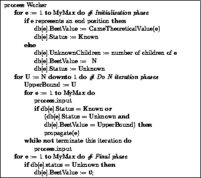
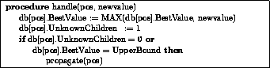
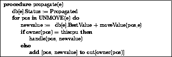
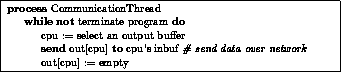

Figure 4: Declaration for the database type.
Figure 5: Declaration for the buffer type.
Figure 6: Declarations for the parallel algorithm.

Figure 7: The worker thread main loop.
Figure 8: The process input procedure.

Figure 9: The handle procedure.

Figure 10: The propagate procedure.

Figure 11: The communication thread algorithm.